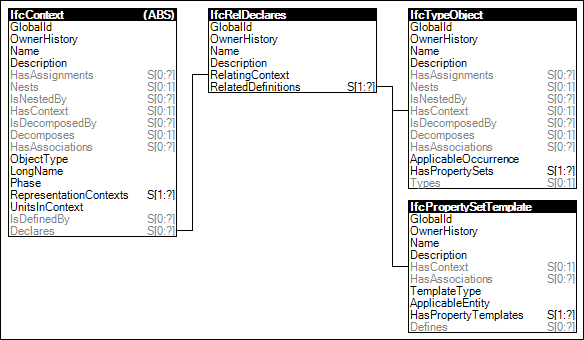

Link to this page
Link to this pageThe project provides a directory of object types and property templates contained within using declaration relationships.
NOTE The actual object occurrences used within the context of a project, such as walls, beams, air outlets, are assigned to a spatial hierarchy that is linked to the project using the aggregation hierarchy. See concept Spatial Decomposition for linking a spatial structure to the project.
Figure 1 illustrates an instance diagram.
 |
Figure 1 — Project Declaration |